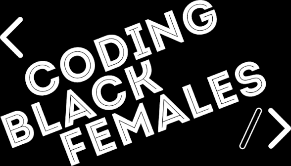
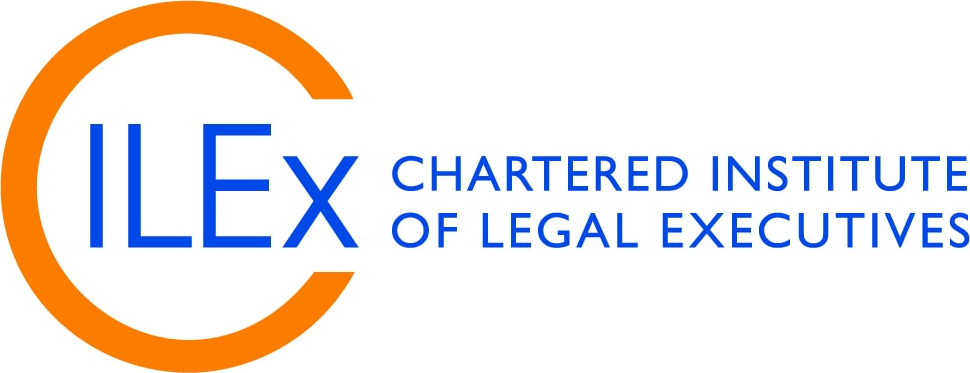
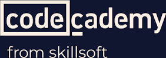
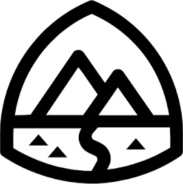
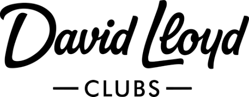

Manifold
Grace
A multidimensional public space connecting research, technology, music, education, public life, heritage, faith and creative practice — formal enough for research and professional use, human enough to remain recognisably mine.
What I am doing now is not chasing more learning for its own sake, restless activity, new certificates, possessions, or an ever-expanding list of hobbies. It is interceding and seeking God's face, allowing that pursuit to order what comes next.
There is still much to do, but I cannot move in every direction at once. Wisdom includes recognising sequence and season: what belongs to this moment, what can wait, and what must mature. Uncovering truths hidden in history matters, but understanding the past should deepen discernment and strengthen forward progress, not suspend it.
In an information age full of competing voices, especially on social media, I want to draw nearer to God and hear what He says first. Before adding movement, noise or ambition, I want direction rooted in that relationship.
Success, to me, includes meaningful goals, wealth and security, recognition where work warrants it, a secure identity and clear direction. I am fortunate to have worked and learned in environments marked by responsibility and high standards across finance, media, public service, education, technology, sport and the arts. I see that exposure as favour, not entitlement. When I describe leadership, I mean observable work: coaching, mentoring, teaching, facilitating, coordinating people and systems, advocacy and accepting responsibility for others.
My career developed from music, live sound and audiovisual work into technology, operations, education, governance, AI ethics and research. I am accomplished in the practical sense of having completed and contributed to meaningful work, while still growing. Some projects were paused by administrative or life constraints, not abandoned; others remain in the pipeline. I will make my opinions more visible as I consolidate them carefully. I am deeply grateful to those who helped me along the way. Love, Grace x
One identity, several routes
The site is organised so a researcher, recruiter, collaborator, creative practitioner, family historian or casual visitor can enter through the area that matters to them without having to decode the whole biography first.
Every deeper page is designed to carry evidence or explanation appropriate to its field, while the landing pages remain intentionally restrained.
Work, research, study & collaboration
Places I’ve researched with, studied at, volunteered with, consulted, or worked at collaboratively.







